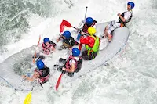

Splash White Water Rafting

We believe that adventure is a pathway to personal growth.
We are committed to:
> Prioritizing the safety of our clients and guides.
> Fostering teamwork and community spirit.
> Respecting and protecting the environment on every expedition.
> Delivering exceptional customer service, making every adventure unforgettable.
History
Founded in 1999, Splash White Water Rafting emerged from a passion for adventure and a deep appreciation for the great outdoors. Our founders, avid outdoor enthusiasts, recognized a gap in the market for high-quality rafting experiences that emphasized safety, sustainability, and customer enjoyment.
Starting with just a handful of inflatable rafts and a few dedicated guides, we offered local excursions on nearby rivers. Word spread quickly about our commitment to excellence and the exhilarating adventures we provided. Within a few years, our popularity soared, allowing us to expand our offerings to a wider range of rivers and introduce new adventure sports.
As we grew, so did our commitment to environmental stewardship. We established initiatives to minimize our impact on the ecosystems we explore, partnering with local organizations to promote conservation efforts.
Today, Splash White Water Rafting is recognized as a leader in the rafting industry, known for our experienced guides, top-notch equipment, and unforgettable experiences. We continue to inspire adventure seekers from all walks of life, fostering a deep connection with nature while prioritizing safety and sustainability.
Join us as we ride the waves and create memories that last a lifetime!